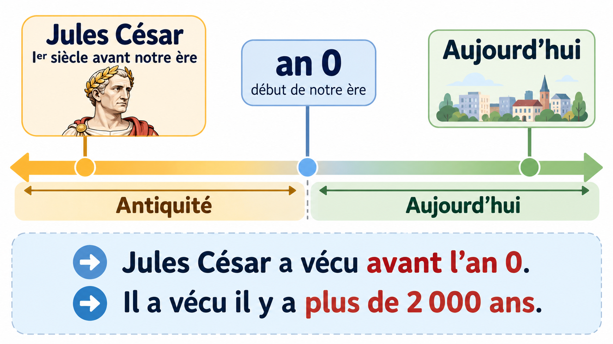

Associer un personnage historique à son époque
Trouver des indices dans une source
Je découvre
Un personnage historique a vécu dans une période précise. Les informations que nous possédons permettent de le situer.


Qui vivait pendant l’Antiquité ? Qui vivait au Moyen Âge ?
Je comprends
Nous avons découvert trois personnages historiques : Jules César, Clovis et Charlemagne. Pour apprendre à retrouver leur époque, nous allons commencer notre enquête avec Jules César. Ensuite, tu pourras utiliser la même méthode pour les autres personnages.
Notre première mission : retrouver l’époque à laquelle a vécu Jules César.
Aide 1J’observe le document
Le document montre un buste.
Un buste, c’est une sculpture qui représente la tête, les épaules et le haut du corps d’une personne.
Ce document est donc une œuvre d’art qui nous donne un indice sur le personnage.
Aide 2Je comprends les mots difficiles
Jules César est présenté comme un homme politique romain.
Un homme politique, c’est une personne qui participe aux décisions importantes et qui aide à diriger un pays ou un territoire.
Romain veut dire qu’il vivait dans le monde de la Rome antique.
Aide 3Je cherche la date
Jules César a vécu au Ier siècle avant notre ère. Pour mieux comprendre, regarde la frise.

Je retiens : Jules César a vécu avant l’an 0. Il a vécu il y a plus de 2 000 ans.
1 · Je lis le nom du personnage.
2 · Je repère la date et les indices.
3 · Je retrouve la période sur une frise.
Leçon — À retenir
Voici la carte mentale pour retrouver l'époque de chaque personnage.


Ma méthode : j'observe un document, je relève le nom et les dates, puis je cherche la période sur une frise.
À toi d'enquêter !
Tu as commencé l'enquête avec Jules César. Maintenant, utilise les mêmes étapes pour Clovis et Charlemagne. Ouvre une aide si tu en as besoin et vérifie ta réponse.
Besoin d'un indice ? Ouvre ton carnet d'enquête
Ma frise pour chercher la bonne époque
Cette frise est simplifiée : les distances ne sont pas proportionnelles au temps.
Encore besoin d'aide ?
Étape 1 : repère la date donnée dans la question.
Étape 2 : retrouve cette date sur la frise.
Étape 3 : lis le nom de la période correspondante. Pour les images, demande-toi si l'œuvre a été réalisée du vivant du personnage ou bien plus tard.
Choisis une réponse, puis clique sur « Vérifier ».